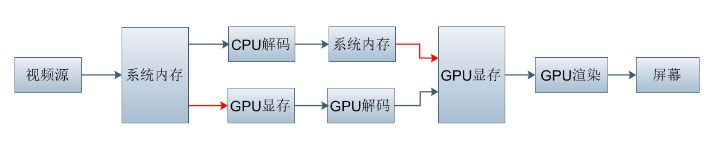
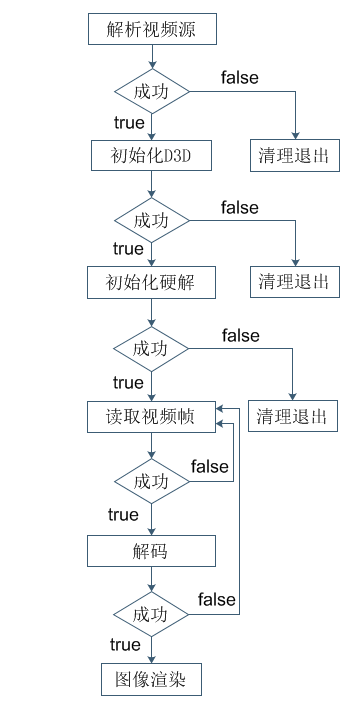

基于FFmpeg的Dxva2硬解码及Direct3D显示（一）
前言
关于视频软解码的资料网上比较多了，但是关于硬解可供参考的资料非常之有限，虽然总得来说软解和硬解的基本逻辑一样，但是实现细节上的差别还是比较多的。虽然目前功能已实现，但是理解不到位的地方还是有的，文中我会抛出来，希望大神们不吝赐教。

上图大致说明了软解和硬解的流程，其中红色箭头表示需要在系统内存与显存之前进行IO，比较费时。
名词解释
FFmpeg：通俗理解就是一套包含视音频编解码、采集、转码及处理等功能的开源库，源码由C语言编写。
Dxva2：就是DirectX Video Acceleration 2.0规范，即利用DirectX 的视频加速规范的2.0版本。值得注意的是这个规范是一个分级的标准，支持该标准的前提下还得看看当前实现了该标准下的哪几种解码能力。比如针对H.264的解码能力从高到低依次分为 A~F 6个等级。
DirectX ：微软开发的多媒体编程接口，由C++语言实现，用于加强3D图形和声音效果，字面意思Direct代表直接操作硬件，X代表可以获取各种硬件服务。
Direct3D：DirectX 的一部分，渲染方式和GDI不一样，可以加速渲染，对标（OpenGL）。
小结：Dxva2 是规范，具体功能实现通过调用 DirectX 提供的API。
代码实现逻辑

实现逻辑还是比较简单的，分为四大块：
- 解析视频源
- 初始化D3D
- 初始化硬件解码器
- 解码显示
接下来将分成四篇博文依次进行介绍。
基于FFmpeg的Dxva2硬解码及Direct3D显示（一）的更多相关文章
- 基于FFmpeg的Dxva2硬解码及Direct3D显示（四）
初始化硬解码上下文 目录 初始化硬解码上下文 创建解码数据缓冲区 创建IDirectXVideoDecoder视频解码器 设置硬解码上下文 解码回调函数 创建解码数据缓冲区 这一步为了得到 LPDIR ...
- 基于FFmpeg的Dxva2硬解码及Direct3D显示（五）
解码及显示 目录 解码及显示 解码 显示 资源清理 解码 循环读取视频帧 AVPacket packet = { 0 }; while (av_read_frame(m_pFmtCtx, &p ...
- 基于FFmpeg的Dxva2硬解码及Direct3D显示（三）
初始化Direct3D 目录 初始化Direct3D 创建Direct3D物理设备对象实例 创建Direct3D渲染设备实例 创建Direct3D视频解码服务 Direct3D渲染可以通过Surfac ...
- 基于FFmpeg的Dxva2硬解码及Direct3D显示（二）
解析视频源 目录 解析视频源 获取视频流 解析视频流 说明:这篇博文分为"获取视频流"和"解析视频流"两个部分,使用的是FFmpeg4.1的版本,与网上流传的低 ...
- 使用C#+FFmpeg+DirectX+dxva2硬件解码播放h264流
本文门槛较高,因此行文看起来会乱一些,如果你看到某处能会心一笑请马上联系我开始摆龙门阵 如果你跟随这篇文章实现了播放器,那你会得到一个高效率,低cpu占用(单路720p视频解码播放占用1%左右cpu) ...
- 【视频开发】 ffmpeg支持的硬解码接口
To enable DXVA2, use the --enable-dxva2 ffmpeg configure switch. To test decoding, use the following ...
- [原]ffmpeg编译android 硬解码支持库 libstagefright
最近花了一天时间将ffmpeg/tools/build_stagefright执行成功,主要是交叉编译所需要的各种动态库的支持没链接上,导致各种报错,基本上网络上问到的问题我都碰到了,特此记录下来. ...
- 【并行计算与CUDA开发】基于NVIDIA显卡的硬编解码的一点心得 （完结）
原文:基于NVIDIA显卡的硬编解码的一点心得 (完结) 1.硬解码软编码方法:大体流程,先用ffmpeg来读取视频文件的包,接着开启两个线程,一个用于硬解码,一个用于软编码,然后将读取的包传给解码器 ...
- 最简单的基于FFMPEG的封装格式转换器（无编解码）
本文介绍一个基于FFMPEG的封装格式转换器.所谓的封装格式转换,就是在AVI,FLV,MKV,MP4这些格式之间转换(相应.avi,.flv,.mkv,.mp4文件).须要注意的是,本程序并不进行视 ...
随机推荐
- 分享一个前辈的NPOIhelper
即拿即用: 首先要下载npoi的dll,此不赘述,接着添加引用: using NPOI.HPSF; using NPOI.HSSF.UserModel; using NPOI.SS.UserModel ...
- Blend 2015 教程 （一） 基础
微软公司在Visual Studio 2015产品套件中作出了许多革命性的变更,包括.NET开源,.NET服务器端部分跨平台,推出向个人和小团队免费的社区版,移动应用开发部分跨平台支持,商店应用支持C ...
- Redis - 作为 LRU 缓存
一.简介 LRU 实际上是被唯一支持的数据移除方法,同时也是 memcached 默认支持的缓存算法. 二.配置内存大小 在 redis.conf 文件中使用 maxmemory 指令能够配置内存大小 ...
- 机器学习：从编程的角度理解BP神经网络
1.简介(只是简单介绍下理论内容帮助理解下面的代码,如果自己写代码实现此理论不够) 1) BP神经网络是一种多层网络算法,其核心是反向传播误差,即: 使用梯度下降法(或其他算法),通过反向传播来不断调 ...
- jdk源码阅读笔记-HashMap
文章出处:[noblogs-it技术博客网站]的博客:jdk1.8源码分析 在Java语言中使用的最多的数据结构大概右两种,第一种是数组,比如Array,ArrayList,第二种链表,比如Array ...
- UVA1449 Dominating Patterns
UVA1449 Dominating Patterns 题目描述 有N个由小写字母组成的模式串以及一个文本串T.每个模式串可能会在文本串中出现多次.你需要找出哪些模式串在文本串T中出现的次数最多. 输 ...
- C语言博客作业02——循环结构
1.本章学习总结 1.1思维导图 1.2本章学习体会及代码量学习体会 1.2.1学习体会 本周学习了循环结构,在之前学习分支结构的时候就涉及到了循环结构中的for循环,这周的又新学了while和do- ...
- Linux系统下DNS主从配置详解
一.DNS概述DNS(Domain Name System),即域名系统.因特网上作为域名和IP地址相互映射的一个分布式数据库,能够使用户更方便的访问互联网,而不用去记住能够被机器直接读取的IP数串. ...
- Newtonsoft.Json 的高级用法
Ø 简介 接着前一篇http://www.cnblogs.com/abeam/p/8295765.html,继续研究 Newtonsoft.Json 的一些高级用法.主要包括: 1. JSON ...
- UVA 10177 Sqr/Rects/Cubes/Boxes?
Problem J (2/3/4)-D Sqr/Rects/Cubes/Boxes? Input: standard input Output: standard output Time Limit: ...